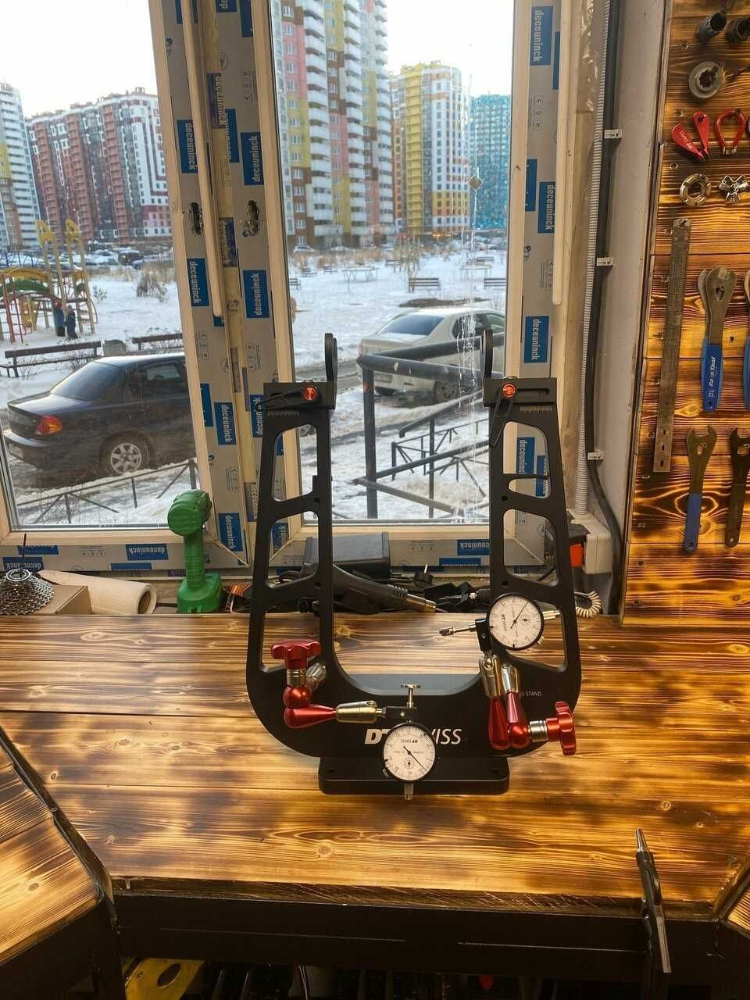
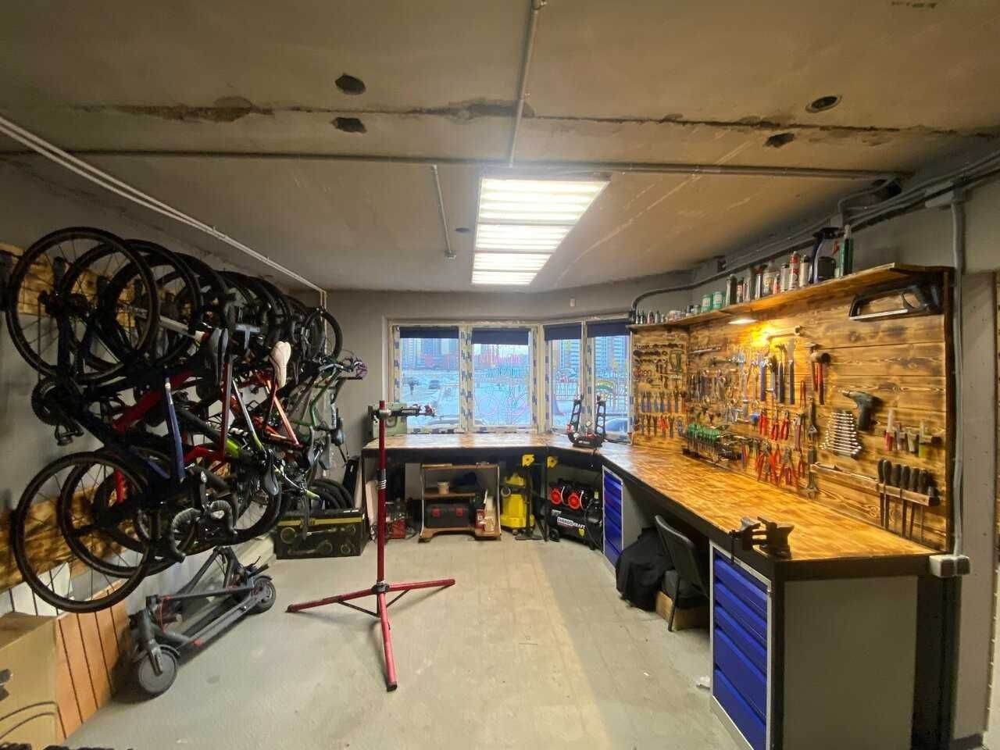

Ремонт велосипедов
Диагностика, настройка тормозов и трансмиссии, замена расходников, подготовка к сезону.
Королёва 68 · ремонт · прокат · товары
Ремонтируем городские, горные и шоссейные велосипеды, выдаём прокат, показываем цены аренды и будущие товары через Telegram Mini App.
Что можно сделать
Сайт не пытается заменить мастера. Он помогает быстро понять, куда нажать дальше.
Диагностика, настройка тормозов и трансмиссии, замена расходников, подготовка к сезону.
Городские, MTB и прогулочные велосипеды. В Mini App можно посмотреть велосипеды и цену по времени.
Аккуратное хранение велосипеда с возможностью проверки перед выдачей весной.
Цепи, камеры, колодки, смазки и аксессуары. В Mini App уже есть раздел будущих товаров.
Почему спокойно
Сначала понятная диагностика, потом решение: делать сейчас, заказать деталь или отложить.
Не меняем рабочее ради чека. Объясняем, что критично, а что можно пережить.
Подбираем детали по совместимости, бюджету и реальному сценарию катания.
Королёва 68. Можно быстро построить маршрут и сразу связаться с мастером.
Telegram Mini App
Клиент открывает Telegram, смотрит велосипеды, выбирает длительность аренды, видит итоговую цену и быстро находит телефон, ВКонтакте, маршрут и часы работы.
Открыть Mini AppРасчет цены аренды
Карточки будущих товаров
Телефон, группа в Telegram, ВКонтакте и карта
Визуально


Отзывы
Три живых отзыва рядом с быстрым переходом на карточку мастерской.
“Отличный пункт проката, рядом с домом, внимательный и доброжелательный Михаил, все расскажет и покажет. Мастер, профессионал, хороший выбор великов, рекомендую однозначно.”
“Один из лучших велосервисов по ремонту и прокату! Миша человек с огромным опытом, решит любой вопрос, связанный с велосипедом: от настройки переключателя до ремонта карбоновой рамы.”
“Обслуживаю свои велосипеды у Миши с 2023 года. Всегда всё аккуратно, точно и очень профессионально. Отличный сервис, которому действительно можно доверять. Рекомендую.”
FAQ
Лучше написать или позвонить заранее, особенно в сезон. Так мастер сразу подскажет окно по времени.
От 1 дня. Базовые настройки часто удаётся сделать быстро, а если нужна редкая деталь или сложный ремонт, мастер сразу назовёт понятный срок.
Да. Велосипеды и цену по длительности аренды можно посмотреть в Telegram Mini App, а детали уточнить у мастера.
Прокат с расчетом цены, будущие товары, контакты, телефон, группа в Telegram, ВКонтакте, режим работы и маршрут до мастерской.
Санкт-Петербург, Королёва 68. Кнопка маршрута откроет точку в Яндекс.Картах.
Контакты
Позвоните, откройте Mini App, напишите во ВКонтакте или сразу постройте маршрут до мастерской.